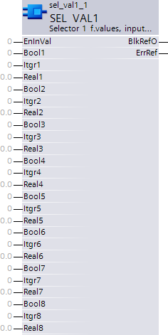
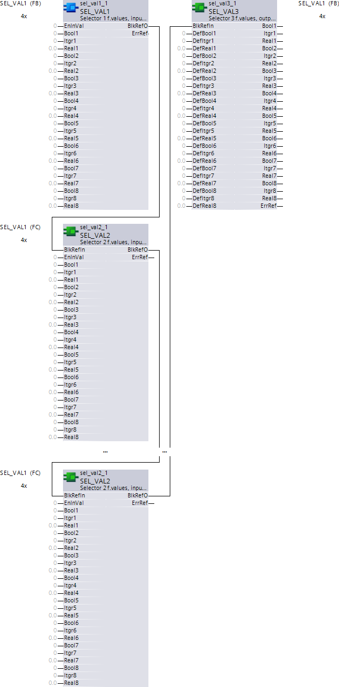

SEL__VAL1：值的选择器 1，输入 , 1.FB
块 SEL_VAL1 (FB500) 与 SEL_VAL2 和 SEL_VAL3 一起构成选择器函数（n 对 1 赋值）。
块 SEL_VAL1 捆绑 24 个输入（8xBoolean、8xInteger、8xReal）并允许仅使用一个信号 [EnInVal] 启用它们。
工作原理
块 SEL_VAL1 和 SEL_VAL2 每个捆绑 24 个输入。启用的输入值 [EnInVal] = True 由块 SEL_VAL3 按顺序读取并输出。

输入
Pin | E | Description |
EnInVal | pa | 启用输入值 块 SEL_VAL3 输出该块的所有输入值。 |
Bool1..8 | pa | 布尔1 布尔输入值 |
Itgr1..8 | pa | 整数1 整数输入值 |
Real1..8 | pa | 真实1 实际输入值 |
输出
Pin | E | Description | |
BlkRefO | a | 块参考输出 与 SEL_VAL2 或 SEL_VAL3 互连。这实现了选择器功能（n-to-1）。 | |
ErrRef | a | 参考错误 | |
1（是） | 块 SEL_VAL3 处不输出任何值。
| ||
0（否） | 功能正常。 | ||
工程选择器功能（n-to-1）
块 SEL_VAL1、SEL_VAL2 和 SEL_VAL3 一起形成一个选择器函数（n 到 1）。
以下互连对于正确的功能很重要。

- Block SEL_VAL1 is the first block in the interconnection sequence. It bundles the first 24 inputs.
- One or more SEL_VAL2 each bundle additional inputs. Blocks are interconnected to one another via [BlkRefIn] and [BlkRefO].
- Block SEL_VAL3 concludes the selector function. It is interconnected via [BlkRefIn] and [BlkRefO] with SEL_VAL1 or SEL_VAL2.
- The processing sequence is important to proper functioning and must be optimized prior to compiling the chart using the CFC command Optimize chart.
- Only a single block (SEL_VAL1, SEL_VAL2) is enabled (the last enabled SEL_VAL2 in the processing sequence has precedence).
注意：在初始编程循环中，会检查互连是否正确以及三个块的版本是否相同。如果不是，则 [ErrRef] = 1（是）并且块 SEL_VAL3 上不会输出任何输入值。
过程响应
标准（参见General rules and information).
故障排除
标准（参见General rules and information).